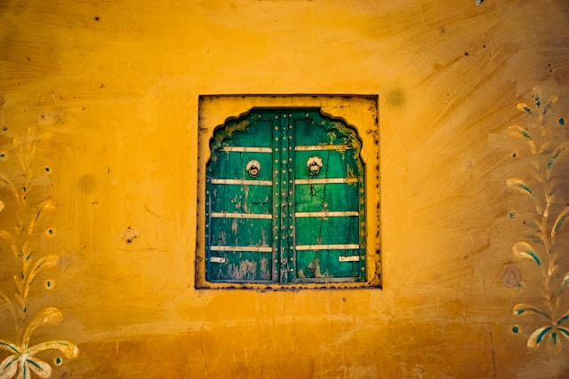

GOOGLE
EMAIL
LOGIN
Welcome Home
India

India: A Land of Diversity and Heritage.
India, known as the world’s largest
democracy, is a country rich in history, culture, and innovation. Located in
South Asia, it is home to over 1.4 billion people, making it one of the most
populous nations on Earth. With 28 states and 8 union territories, India
boasts a diverse range of languages, traditions, and cuisines. Hindi and
English are widely spoken, but there are over 20 officially recognized
languages. India's cultural heritage is deeply rooted in its ancient
civilizations, with iconic landmarks like the Taj Mahal, Qutub Minar, and
Jaipur’s Amber Fort showcasing its architectural brilliance.
Known for
spiritual diversity, India is the birthplace of major religions such as
Hinduism, Buddhism, Jainism, and Sikhism. Economically, India is rapidly
growing in sectors like technology, pharmaceuticals, and space exploration,
with organizations like ISRO making significant strides globally. India’s
vibrant festivals like Diwali, Holi, and Eid reflect its rich cultural
spirit. From the serene beaches of Goa to the snow-capped peaks of the
Himalayas, India offers breathtaking landscapes and unforgettable
experiences. Embracing both tradition and modernity, India continues to
leave a lasting impact on the world stage.
Ancient India: A Cradle of Civilization
Ancient India is renowned for its rich cultural heritage, intellectual achievements, and remarkable contributions to science, art, and philosophy. Dating back to the Indus Valley Civilization (circa 3300–1300 BCE), ancient India was home to some of the world's earliest urban settlements like Harappa and Mohenjo-Daro, known for advanced drainage systems, planned cities, and trade networks.
The Vedic Age (1500–500 BCE) marked the foundation of Hinduism, with texts like the Rigveda shaping spiritual and social beliefs. This period also saw the development of key concepts in mathematics, astronomy, and medicine. The invention of the decimal system, the concept of zero, and the advancement of Ayurveda are among India's notable achievements.
The Maurya Empire (321–185 BCE), led by the legendary Emperor Ashoka, promoted peace and Buddhism across Asia. The Gupta Empire (320–550 CE) is often called the Golden Age of India, known for significant progress in science, literature, and the arts.Ancient India’s cultural richness is reflected in epic texts like the Mahabharata and Ramayana, as well as architectural marvels such as the Ajanta Caves and Ellora Temples. With its lasting contributions to knowledge and culture, ancient India continues to inspire the modern world.